Radical.Tools, explained
One model of your architecture; every diagram, table and wiki page derived from it. This guide walks through modelling, the six view kinds, milestones, presentations, files, the metamodel editor, the Concept Hub, the AI assistant and the MCP server that lets coding agents edit the model.
Screenshots follow the theme you pick in the top bar — toggle it to see the other look.
Getting started
Radical.Tools runs in the browser at studio.radical.tools — no account, nothing uploaded — or as a desktop app (see local install). On first launch you land on the Welcome screen. It asks one thing first — a new model or an existing one — and the details come in the next step:
- New model — pick the metamodel (Radical is preselected, plain C4 is the other choice, and the metamodel editor changes it later) and where to keep the model: in this browser, in a file (one
.radicalfile, every change saved to it) or in a folder (Markdown files, see Models & files). The choice of storage is remembered. Once an AI provider is set up, Create with Radical Forge starts the model from a description instead. - Open — a recent model, the ones kept in this browser, a file, a folder, a Structurizr DSL workspace or the sample.
- Try the sample — the Fintech Banking Platform used throughout this guide: 65 elements — architecture, ADRs and fitness functions, the needs behind it (a regulation, a product brief and a client's feedback), the EARS requirements derived from them, Gherkin scenarios and 13 UI mockups with wireframes in three screen flows — 15 views of every kind, four sequences, four milestones and a ready-made presentation. A first visit offers it right under the two choices.
- Recent — your last three models, one click away; Open lists more.
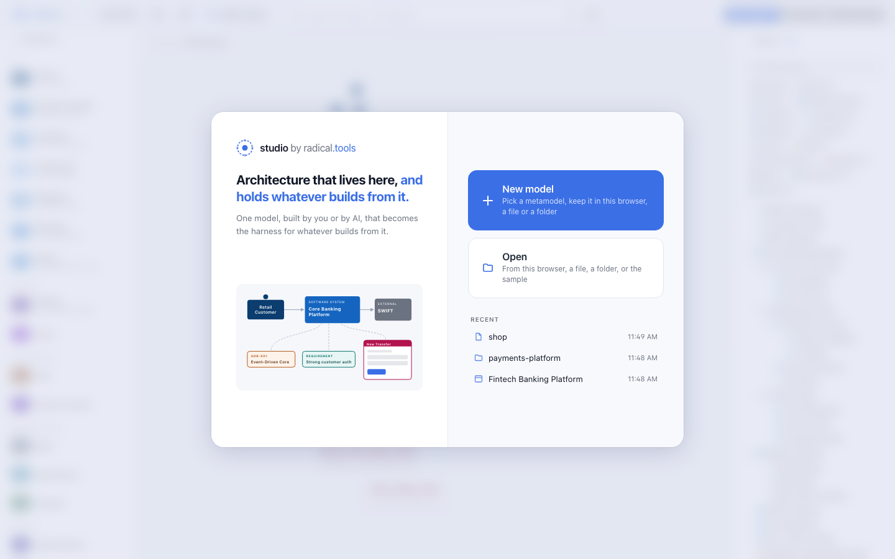
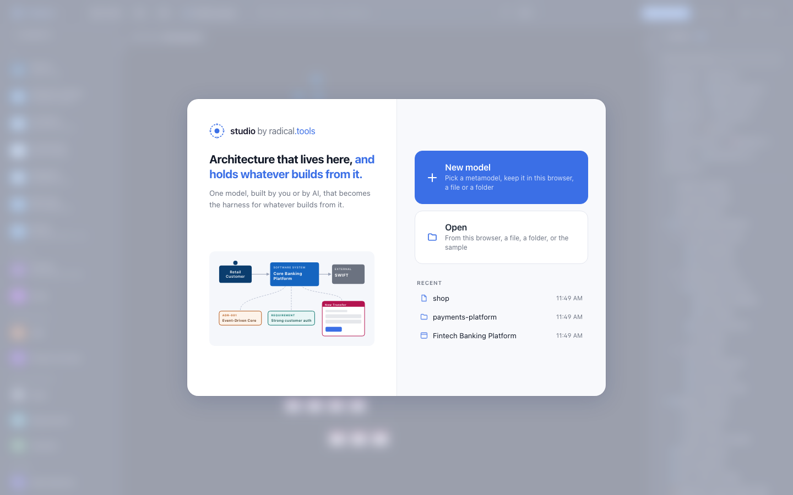
studio.radical.tools/#/m/designer/v/canvas skips the Welcome screen and opens the last active model directly. See Deep links.
The workspace
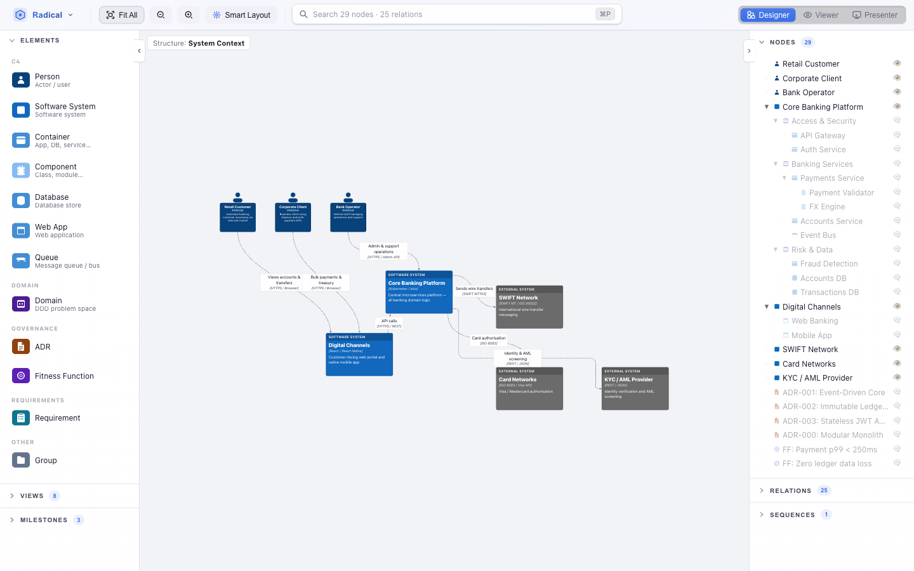
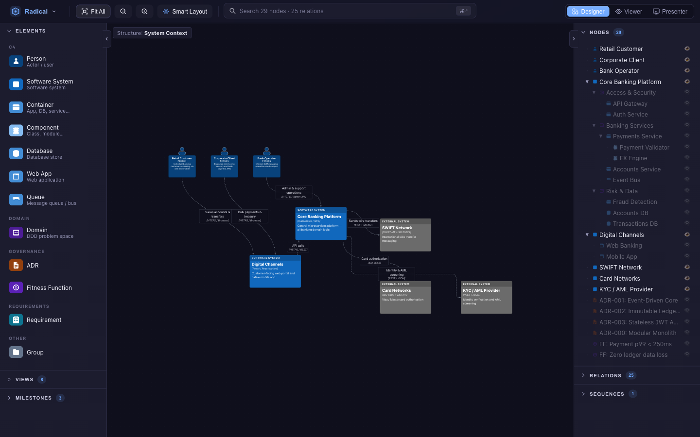
Toolbar
- Radical menu (logo, top-left) — Manage models…, Import from Hub…, Metamodel editor…, light/dark theme, Smart Fit, the connect key, AI providers… and export (PNG, SVG, copy to clipboard).
- Fit All, zoom out / in, Smart Layout (or Tree Layout when the view asks for it), Undo / Redo.
- Quick Search (⌘/Ctrl+P) — find any element, relation or view; doubles as the AI prompt.
- Perspective switch — Designer edits, Viewer explores read-only, Presenter builds and plays slide decks.
Left panel
Three collapsible sections: Elements (the palette — drag onto the canvas), Views (one card per view, with node count and kind) and Milestones. In Viewer and Presenter the palette disappears and Views takes the top.
Canvas
The chip in the top-left corner names the active view (Structure: System Context) or, when time-travelling, the active milestone. Nodes can be dragged, nested, collapsed and connected here; the other view kinds replace the canvas with their own surface.
Right panel
Nodes is the model tree — every element, whether or not the current view shows it; the eye icon toggles visibility in the active view and dimmed rows are outside it. Relations and Sequences follow. Selecting anything slides the panel to its properties.
Models & files
A model is a document, kept in one of three places:
- This browser — browser storage. Nothing to pick; export a file to share it.
- A file — a single
.radicalJSON file on disk. In the desktop app and in Chromium browsers (File System Access API) every change is saved back to the file; other browsers can only import and download one. - A folder — a Markdown folder: one
.mdper element with YAML front-matter, nested directories for containment, JSON sidecars for layout, views and relations. Diff-friendly and readable without the app. Works in the desktop app and in Chromium browsers.
Radical menu → Manage models… lists every model on one list, the last used first, with a search box and a filter by place (All, Browser, Files, Folders). Click a row to switch to it. Its ⋯ menu renames it, moves the open model to a file or a folder, and deletes it (a file or folder is only removed from the list; it stays on disk). + New model and Open… are the same steps as on the Welcome screen; Open… → Structurizr DSL… converts a .dsl workspace into a new model.
Every change is autosaved (a few hundred milliseconds after you stop editing) to wherever the document lives. In the browser, a file or folder needs access granted again after a reload: click it on the Welcome screen, or Reconnect… on its row.
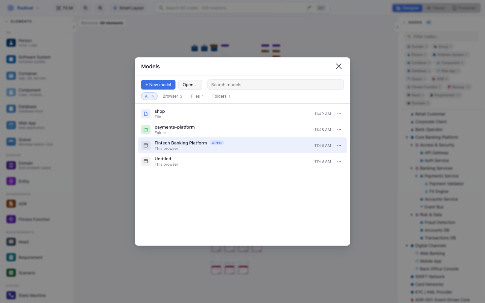
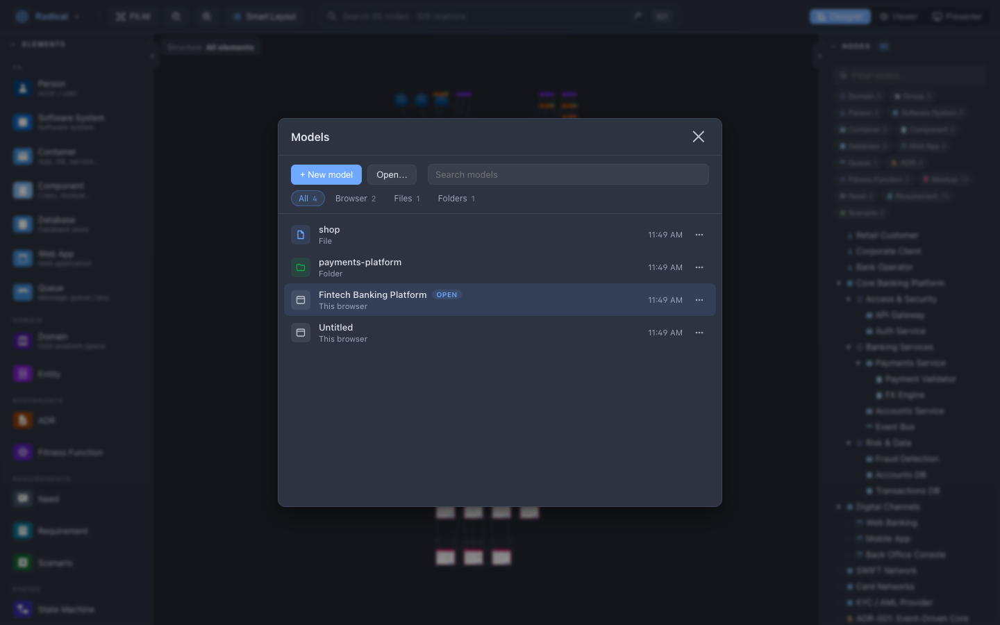
radical --file path/to/model.radical (or the RADICAL_FILE environment variable) and the app reloads whenever that file changes on disk — handy next to a text editor or a Git checkout.
Elements
- Drag from the palette onto the canvas. Drop it on top of a container-type node (a system, domain, group…) to make it a child — the parent highlights while you hover.
- Double-click an empty spot on the canvas to create a Software System right there.
- Import from the Hub — see Concept Hub.
The metamodel decides what is allowed. Dropping a Component directly on the canvas, a Person inside a System, or a fourth element of a type limited to three is refused with a message rather than silently drawn — so the model stays valid.
Containment
Change a parent any time with the Parent field in properties, or by dragging the node into another container. Collapse a container with the toggle in its header or in the model tree; children fold away and relations re-attach to the parent. In a named view, collapsing is per view — the same system can be open in one view and folded in another. A Group has no meaning of its own: it can sit at the root, in another group or inside a system, where it gathers some of the system's parts (shared libraries, say) the way groups do in Structurizr.
Visibility per view
Elements exist once in the model and appear in as many views as you like. Use the eye icon in the model tree (or Hide from view in the selection bar) to add or remove an element from the active view. Ancestors of a visible element are included automatically.
Relations
- Hold the connect key — Alt by default; change it under Radical menu → Connect key.
- Press on the source node, drag to the target, release. A preview line follows the pointer; Esc cancels.
The relation type is inferred from the metamodel (e.g. Interacts between C4 elements, Constrains from an ADR). Pairs the metamodel does not allow are refused. Select an edge to edit its label, technology and relation type in the right panel; the edge action bar under it lets you re-route the source or the target, hide the relation from the active view, or delete it.
Properties & governance
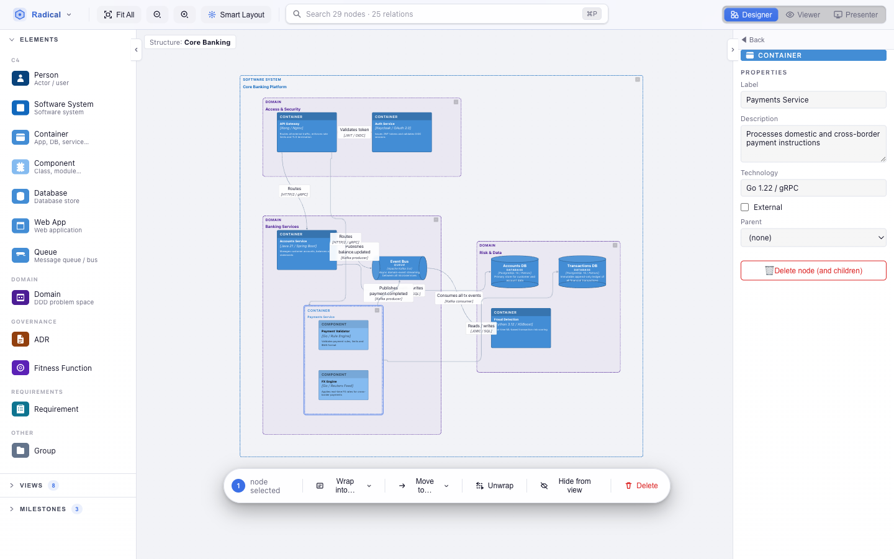
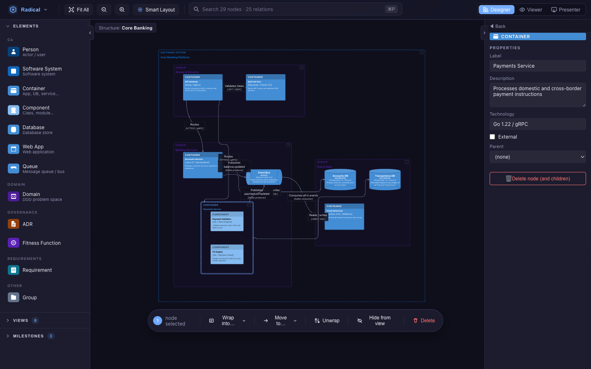
Every element has a label, description and parent; C4 runtime elements add technology and an external flag. Everything else is defined by the metamodel: text, long text, number, boolean and enum fields, and references to other elements, optionally shown only when another field has a given value. A reference points at one element of a given type, or several (a transition's Event, the events it Raises): you pick them from a list, the model keeps their ids, and renaming the element never breaks the link. A reference to an element that was deleted is marked ⚠ and listed under Validation in the Metamodel editor.
Needs
A Need (palette group Requirements) keeps raw input exactly as it arrived: a brief, a user story, meeting notes, a quoted regulation or a list of raw requirements. The text is free-form and is the element's description, so in a Markdown folder it is simply the body of its file. Kind says what it is and Source who or where it came from. There is no status: a need in the model is an accepted one.
Needs are where EARS requirements come from. A requirement links to the need it was written from with Derives from (the same relation that links a sub-requirement to its parent), so every requirement traces back to the words someone actually wrote. Needs nest the same way: a need that is part of a broader one (one stakeholder's notes within a discovery, one chapter of a regulation) links to it with Derives from, which its wizard asks as Part of. A need's Wiki page lists its sub-needs and the requirements derived from it under Derives from this, and adding a child there creates either, already linked; the Need tab of a Table shows them as a tree. Nothing satisfies or verifies a need directly; that is what its requirements are for.
Requirements (EARS)
A Requirement is edited as a sentence. Pick the EARS pattern — ubiquitous, event-driven (When …), state-driven (While …), unwanted behaviour (If …, then …), optional (Where …) or complex — and click the highlighted slots to fill trigger, condition and action. Or just type the whole thing into the quick-entry box:
When the user clicks save, the system shall persist the document
…and it is parsed into type, trigger and action. The subject (“the system”) is taken from the element the requirement constrains, when there is one. Status and priority (MoSCoW) are enums.
ADRs and fitness functions
ADRs carry status (proposed → accepted → deprecated / superseded), date, context, decision, consequences and alternatives. Fitness functions carry category, trigger (on deploy / continuous / periodic), an automated flag, threshold and status. Both are ordinary elements: link them with Constrains, Supersedes, Implements, Satisfies, Derives and Traces-to relations to the parts of the architecture they govern, and they show up in the Table, Matrix and Wiki views like anything else.
Wizards
Creating an ADR, fitness function, need, requirement, scenario or mockup — dropped on the canvas or a table, or added from a wiki page — opens a wizard that walks through its fields one step at a time, with a prompt for each, and ends with the relations that give it meaning (which elements an ADR constrains, which earlier ADR it supersedes…). The element is only created when you press Create (⌘/Ctrl+Enter from any step); Esc discards it. Fill in with wizard… in the properties panel reopens it for an existing element, and Wizard on create in the app menu turns the automatic wizard off. Wizards are part of the metamodel (wizard on a node type), so custom metamodels can define their own.
Mockups & screen flows
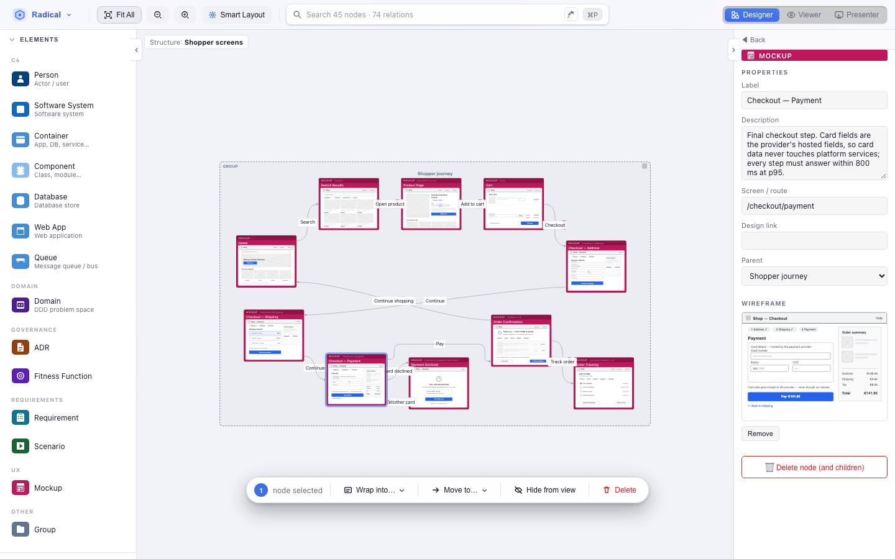
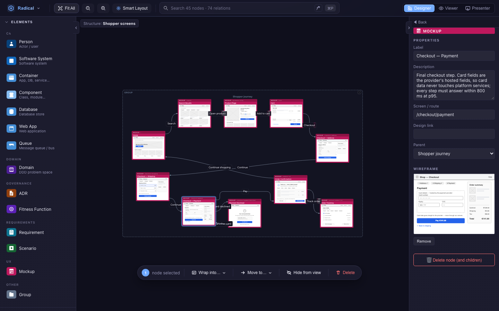
A Mockup (palette group UX) is one screen of the product. Beside label and description it has a Screen / route and an optional Design link to an external design (Figma, Penpot, …). Link it to the rest of the model with three relations:
- Illustrates — mockup → the requirements and scenarios the screen shows.
- Presented by — mockup → the web app or container that renders it.
- Navigates to — mockup → mockup, labelled with the triggering action (Pay, Add to cart). Chains of these are screen flows.
Wireframes
The Wireframe section of a mockup's properties (and of its Wiki page) shows a low-fi wireframe. With AI enabled, Generate wireframe drafts one from the model around the screen: its description and route, the EARS requirements and Gherkin scenarios it illustrates, the container that presents it and the screens it navigates to. Regenerate and Remove do what they say; Open design follows the design link. Wireframes appear as thumbnails on the canvas and on Wiki overview cards.
A wireframe is plain SVG stored on the element. Scripts, event handlers and external references are stripped, and it is only ever displayed as an image, so it can never run code or load anything.
Screen flows
Group the mockups of one actor's journey in a Group (“Shopper journey”) and link the steps with Navigates to, including branches and returns (Payment → Payment declined → try again). Record the steps as a sequence to replay the flow screen by screen in a Flow view or in Presenter.
Domain model
The Radical metamodel can hold the domain model the requirements talk about, in their own words (palette group Domain):
- Domain — a bounded context or subdomain, a part of the business with its own language and rules. Kind says whether it is core (what sets the system apart), supporting or generic. Domains nest for subdomains.
- Entity — a thing with an identity inside a domain: a reservation, a customer, a product. An aggregate root is changed as a whole and keeps its own rules (solid border); an entity is a part that only lives inside one (dashed border). Plain values such as an address or an amount are not entities; describe them on the entity that holds them.
Relate them with:
- Part of — entity → its aggregate root (an order line → the order). The Table and Wiki views list an aggregate's parts under its root.
- References — entity → entity in another aggregate (a reservation is for a customer), with a Cardinality of one or many. Aggregates refer to each other only this way, never as parts.
- Depends on and Partnership (with its pattern: customer-supplier, anti-corruption layer, …) — domain → domain: the context map.
- Realises — the system or container that serves a domain, or the element that owns an entity's data → it. An entity Satisfies the requirements that are about it, and a state machine is the Lifecycle of an entity.
The Validation list in the Metamodel editor warns about an entity that is neither a root nor part of an aggregate, a part of two aggregates, a part of something that is not a root, and an aggregate root inside another.
State machines
A State machine (palette group States, in the Radical metamodel) models the lifecycle of one Entity — a domain object such as a reservation, an order or a payment (palette group Domain; its Kind says whether it is an aggregate root) — as an event-driven, hierarchical statechart with the semantics of SCXML and XState. It is a frame on the canvas, named after its entity; drop its parts into it.
- State — a rounded box with optional entry, exit and do actions, drawn under its name (
entry / start payment timer). Drop states into a state to make it compound: being in a child state means being in its parent too, and a transition that leaves the parent leaves any child (one Cancel for all of them). Set Kind to parallel to make its child states regions that are active at the same time, drawn with dashed borders (packing and invoicing an order), or to final to end the machine or its parent, drawn as a bullseye. - Pseudostate — the dot that marks the initial state: the machine and every compound state that is not parallel have one, with a single transition to the state they start in. Shallow and deep history (H, H*) re-enter the state a compound state was last in; choice (a diamond) branches on guards.
- Event — something that happens to the thing: a user action, a message from another system or a timer (Source), with an optional Payload. Events live in the machine or in a system, domain or group, so several machines can share them.
Connect the parts with relations:
- Transition — state → state (or pseudostate). Pick its Event (the trigger; none for a transition that fires when its state completes), and fill in a Guard, Actions and the events it Raises. The arrow is labelled the usual way:
PaymentReceived [amount ≥ total] / reserve stock ^OrderPaid, with the events' current names. - Emits — a state (on entry, exit or do), a machine, or a C4 element → the event it publishes.
- Lifecycle of — machine → the entity it models; one machine per entity (two lifecycles of one thing are regions of a parallel state).
- Implements — the system, container, component or web app that runs the machine → machine. Realises — the element that owns the entity's data → entity.
- A scenario Verifies a machine, a machine Satisfies requirements, and a mockup Illustrates the state it shows. A state-driven requirement (While …) can point at the state it holds in with While in state: its sentence then reads While the Reservation is Confirmed, …, and follows a rename.
Beyond what may sit where, the Validation list in the Metamodel editor checks that a statechart can run: each machine the lifecycle of one entity and no entity with two machines, one initial state per machine and compound state, at least two regions in a parallel state, nothing leaving a final state, no transition leaving its machine, no two unguarded transitions from one state on the same event, and no state the initial state cannot reach. These are warnings: a machine is often incomplete while you build it. Radical Forge can derive machines from your scenarios, and the MCP server tells an agent about the warnings its changes bring in.
Working with selections
Click selects one element; Shift, ⌘/Ctrl or Alt-click adds more. With several nodes selected the selection bar appears above the canvas:
- Wrap into… — create a new container of an allowed type around the selection.
- Move to… — re-parent the selection into another container.
- Unwrap — remove a container but keep its children and their relations.
- Align… — keep the elements in a row, a column or a grid on this canvas, optionally in the order you selected them (see Alignments). With a single container selected it reads Align children….
- Hide from view — take the elements out of the active view without touching the model.
- Delete — remove from the model (with children); Delete does the same. Everything is undoable with ⌘/Ctrl+Z.
Views
A view is a named, saved reading of the model: which elements it shows, how they are laid out, where the camera was, and how it renders them. Nothing in a view changes the model; deleting a view deletes no elements.
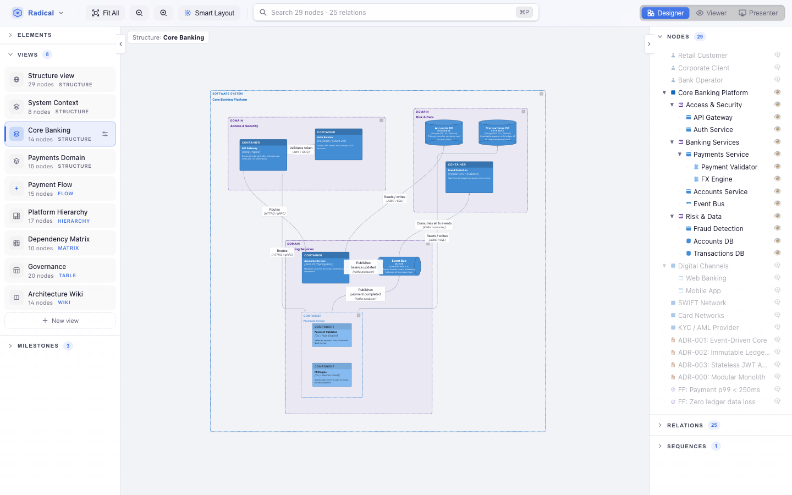
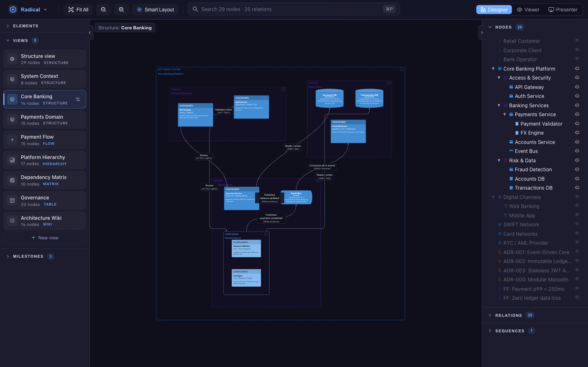
- Create with + New view in the left panel; it starts with the elements currently on screen.
- Open properties (the pencil on the active card) to rename it, change its kind, pick a layout mode (Auto or Tree), link a sequence for Flow views, or tune the treemap.
- Positions, camera and collapse state are per view. Arrange a container map one way and a context diagram another — switching back restores each exactly.
- Hidden relations — a relation can be hidden in one view (edge action bar) while staying in the model and in every other view.
| Kind | What it shows | Best for |
|---|---|---|
| Structure | Node-and-link diagram with nesting | System context, container and component maps |
| Flow | Numbered steps of a sequence between participants | Runtime scenarios, “what happens when…” |
| Hierarchy | Drillable treemap of containment | Portfolio overviews, size and ownership |
| Table | Editable spreadsheet with governance tabs | Bulk editing, ADR and requirement registers |
| Matrix | Dependency structure matrix | Coupling, cycles, who-depends-on-whom |
| Wiki | One document page per element | Reading, reviewing, editing prose |
Structure views
The classic diagram. Relations between elements hidden inside a collapsed container are drawn to the container instead, so a system-level view stays readable while the detail is one click away. Set the view's layout mode to Tree for deep containment hierarchies; the Smart Layout button then runs a top-down tree layout instead of the graph ensemble.
Flow views & sequences
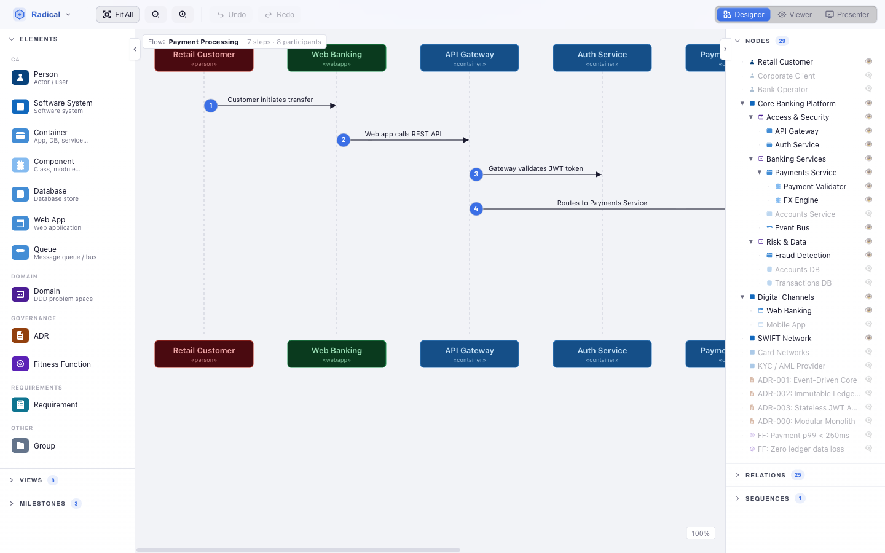
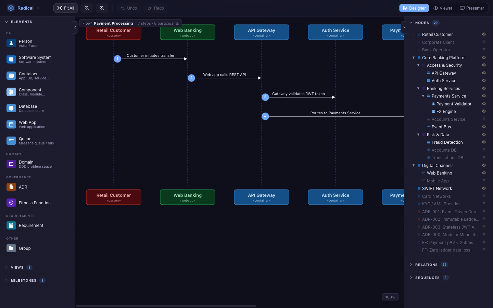
A sequence is an ordered list of existing relations. Open Sequences in the right panel, click + New sequence, then click relations on the canvas to append them as steps. Reorder with the arrows, add a note per step (shown on the arrow instead of the relation label), remove steps, or Create a Flow view for the sequence in one click. A Flow view is linked to exactly one sequence; participants are the elements involved, in order of first appearance. Zoom with ⌘/Ctrl++/−, 0 fits.
Sequences are stored with milestones, so a Flow view can show how a scenario changed over time, and Presenter replays them step by step.
Hierarchy views
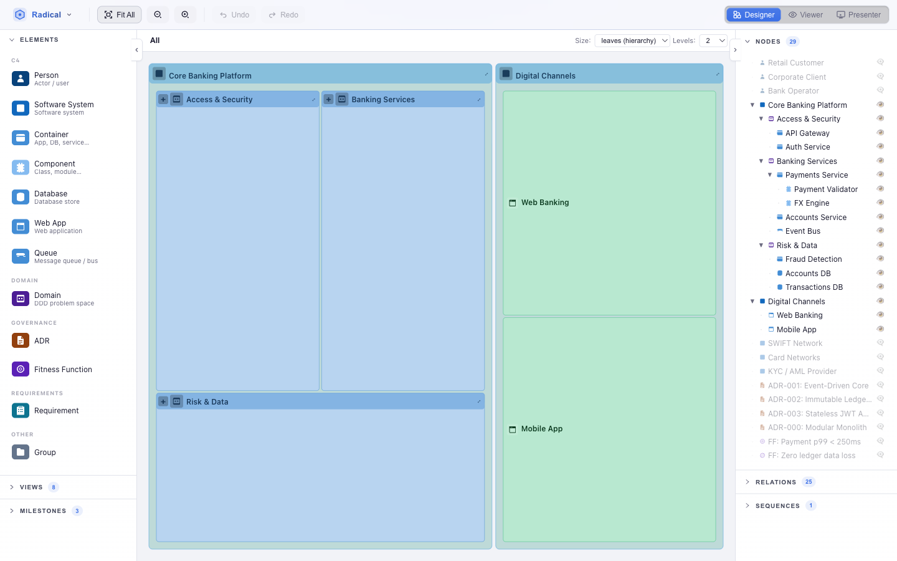
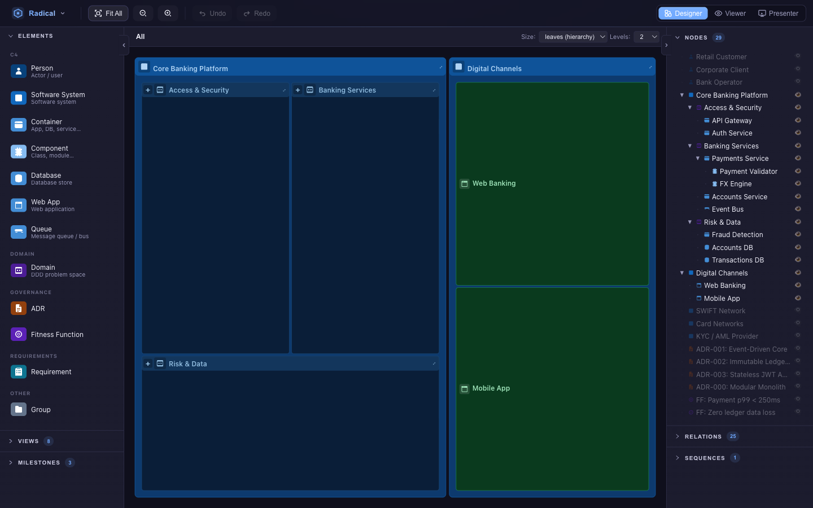
- Size — Leaves (area ∝ number of descendants), Uniform (siblings equal) or Relations (area ∝ connectivity).
- Levels — how many levels below the focus to render; expand a single branch inline without changing the limit.
- Drill — click to focus a subtree; Esc or Backspace goes up. Focus and depth are remembered per view.
Table views
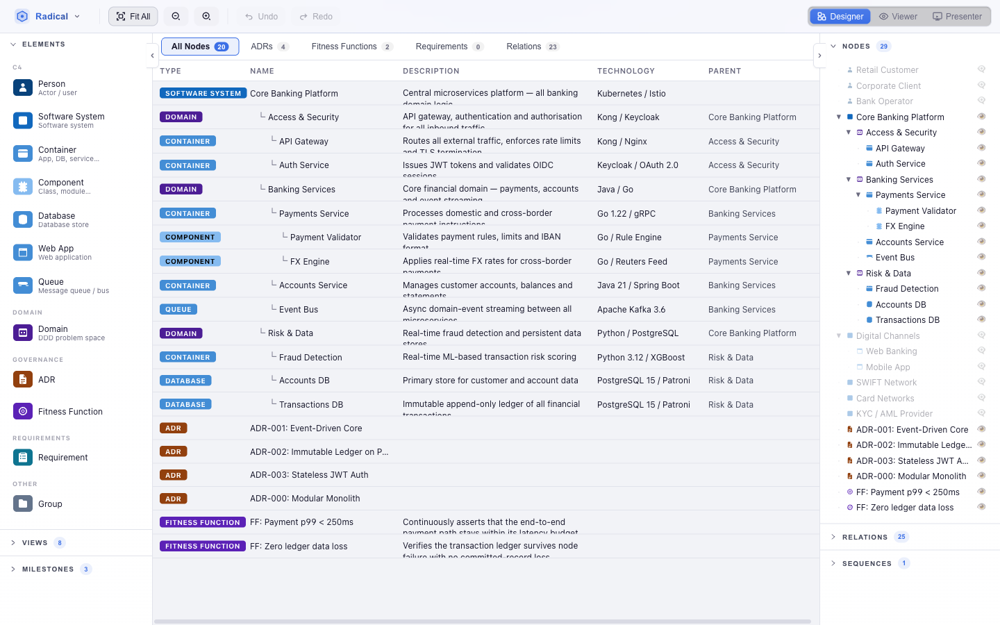
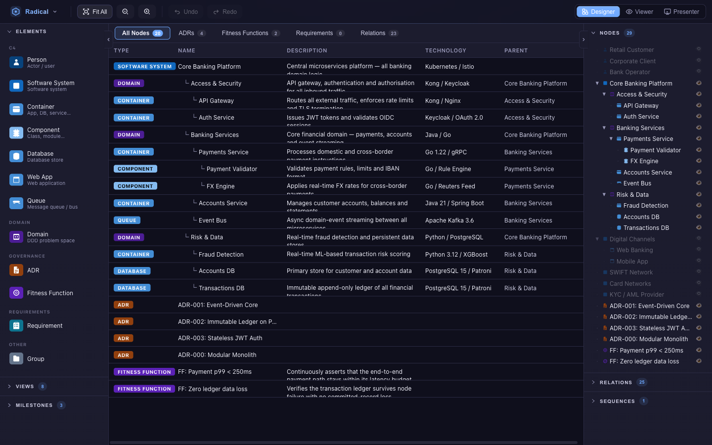
All nodes shows the containment tree as indented rows; ADRs, Fitness Functions, Needs and Requirements expose their governance fields (status, kind, EARS pattern and slots…) as columns; Relations lists every edge with source, target, label, technology and type. Click a cell to edit it in place — enums become dropdowns, and columns that depend on another value (an EARS trigger only exists for event-driven requirements) grey out when they do not apply. Drop a palette item onto a row to add a child of that element.
Matrix views
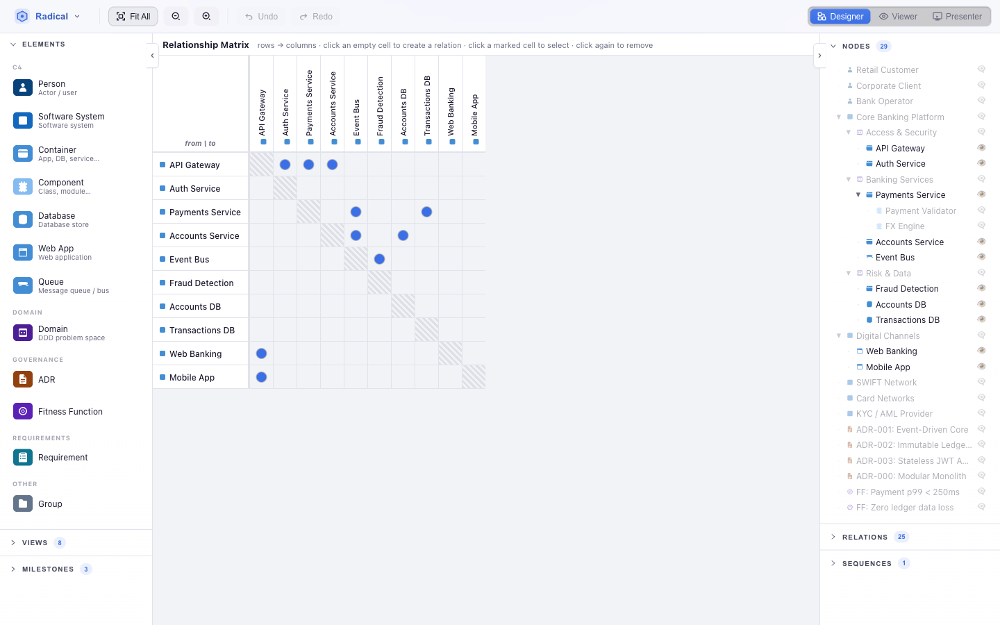
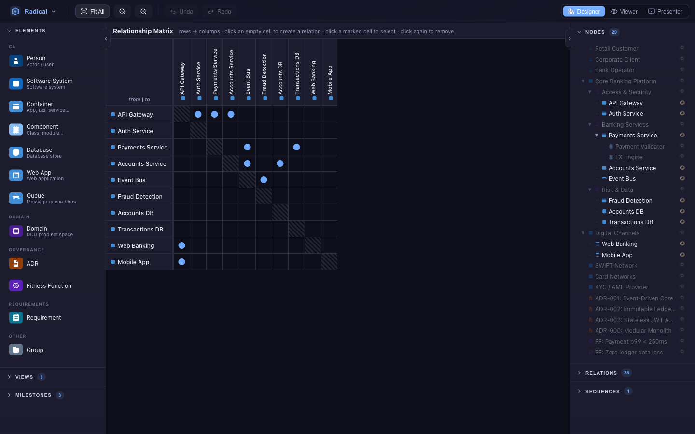
A design structure matrix of the view's elements. A filled cell means at least one relation from the row element to the column element; click it to see which. Because the matrix is just another view, it stays in sync with every diagram — add a relation on a Structure view and the cell lights up.
Wiki views
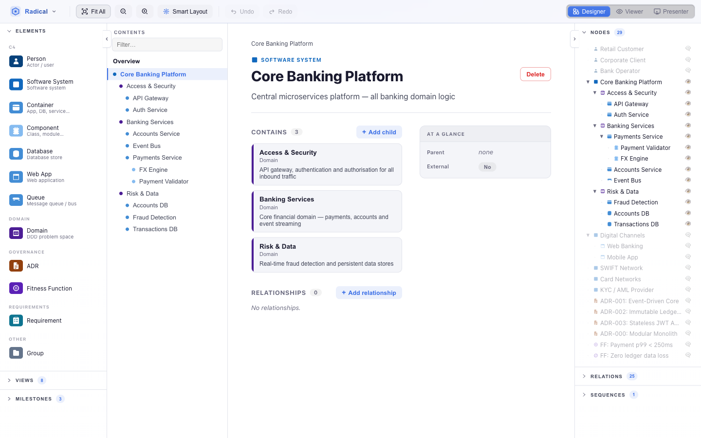
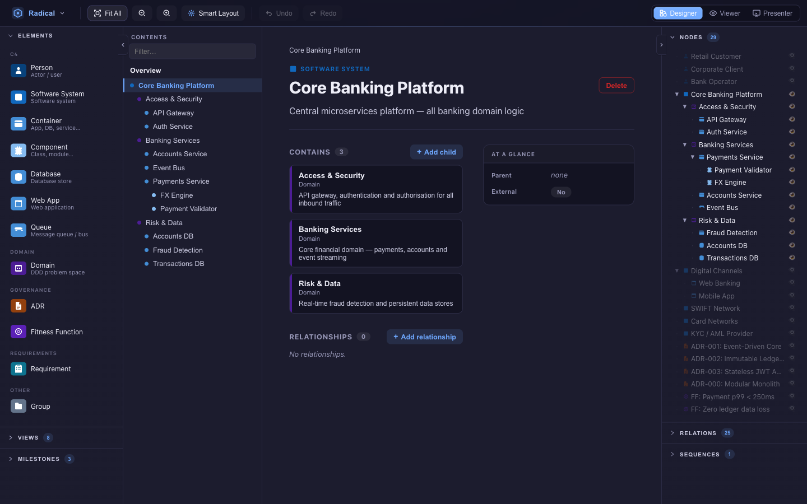
The overview page lists the view's elements as a table of contents; each element page shows its description as prose, short facts (status, technology, priority…) in an infobox, long fields as sections, children, and incoming and outgoing relations as links. Requirements show their EARS sentence with editable slots; a need's page lists the requirements derived from it. You can add child elements and relations directly from a page. The page you are on is saved with the view, so a deep link lands on it.
Layout & navigation
Smart Layout
One button, several algorithms: a layered layout (ELK), a force-directed layout and a simulated-annealing pass are run as candidates, scored for edge crossings, overlaps and compactness, and the best one is applied — with edge routing cleaned up afterwards. It respects containment, so children are arranged inside their parents. A view with Tree layout mode gets a hierarchical tree layout instead.
Dragging and pins
A drag moves only what you drag: the element (with the other selected elements, if you drag a selection), and the elements it is kept in a row or column with, which follow it across the line. Nothing else moves while you drag. When you drop it, elements it now covers are pushed just clear, each in one piece and in one direction, and a container that grew pushes its neighbours the same way; the rest of the diagram stays where it was.
A dropped element is pinned: the live physics (below) leaves it where you put it from then on. Select it to see the pin at its corner; click the pin to unpin it. A view's pinned elements are listed in its properties, with a button that unpins them all. Running Smart Layout rearranges the whole canvas and unpins everything on it (Undo brings the pins back with the old positions); if it keeps the current layout, the pins stay.
Live physics
A light force simulation keeps containers hugging their children and makes room when an element is added or a container expanded. Hold ⌘/Ctrl as you start a drag to let it nudge neighbours out of the way while you drag; the node you hold stays where you put it, and pinned elements do not move.
Alignments
Select two or more elements and choose Align… → Keep in a row (centres on one horizontal line) or Keep in a column (one vertical line). The rule belongs to the canvas you made it on — All elements or one view — and every layout keeps it: drag one member — or an element inside a member container, which grows or shrinks it — and the others follow, the live physics holds the line, Smart Layout picks its best arrangement with the alignment applied. Members may sit in different containers, and expanded containers can be aligned by their boxes.
With Keep their order ticked in the same menu (the default; Studio remembers your choice) the elements also keep the order you selected them in, left to right or top to bottom — select them right to left and the row swaps them round. Drag one past its neighbour and the neighbour is pushed ahead, and Smart Layout never swaps them. Dashed guides show each alignment, with arrowheads when the order is kept; select a member to get buttons that switch order-keeping and remove the alignment, or use Align… → Stop keeping aligned. A view's alignments are also listed in its properties, each with an in order switch (the order they are listed in, which is the order they were selected in).
Align… → Keep in a grid (three or more elements) puts them in a grid filled row by row in the order you selected them, and lays it out in even cells. Pick the number of columns with − / + in the menu (about square by default); later, select a member and use − / + on the guide, or the columns field in the view's properties. Every row stays a row and every column a column, in order, whatever moves.
To arrange what is inside a container, select just the container: the button reads Align children… and offers the same row, column and grid for its children, in the order they stand now — left to right, top to bottom, or row by row for a grid. This works on a collapsed container too: the rule is saved straight away and the children line up when you expand it. With the container selected, its children's guides show their buttons too.
Fit & Smart Fit
Fit All frames the visible elements. Smart Fit (Radical menu) keeps the camera fitted as the diagram changes — useful while importing or laying out, less so while hand-arranging. Scroll to zoom, drag the background to pan.
Quick Search
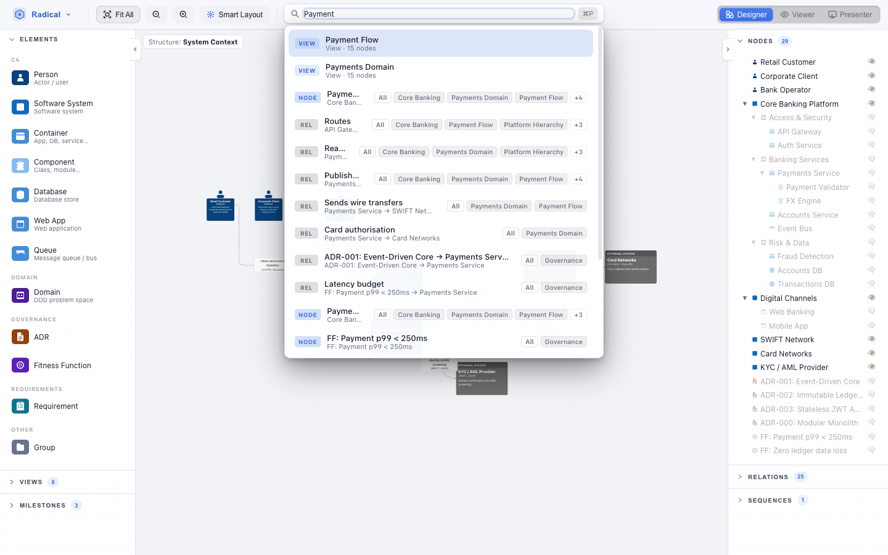
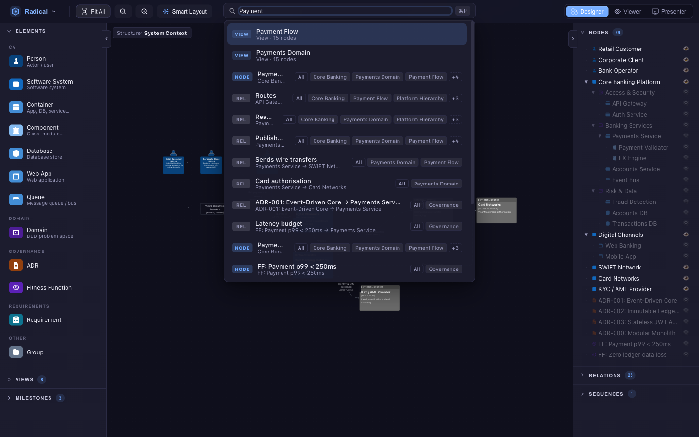
Results are ranked across labels, descriptions and technology. ↑/↓ to move, Enter to select and centre the camera on the element, Esc to close. With an AI provider configured the same box becomes the assistant (see AI assistant).
Milestones
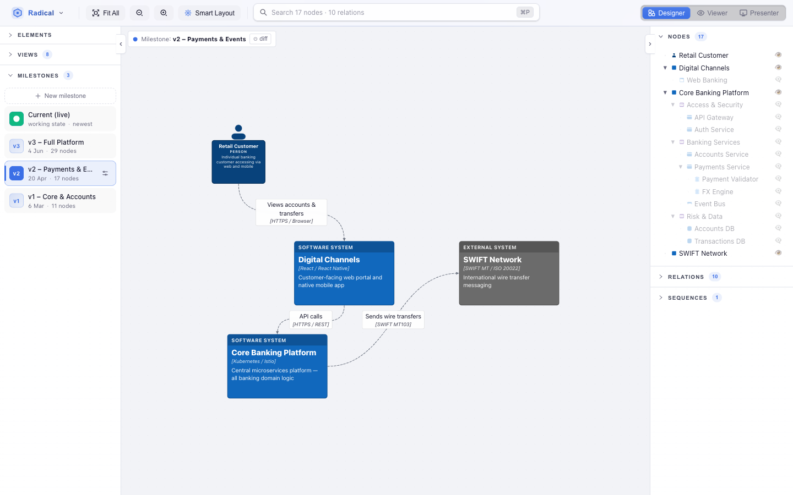
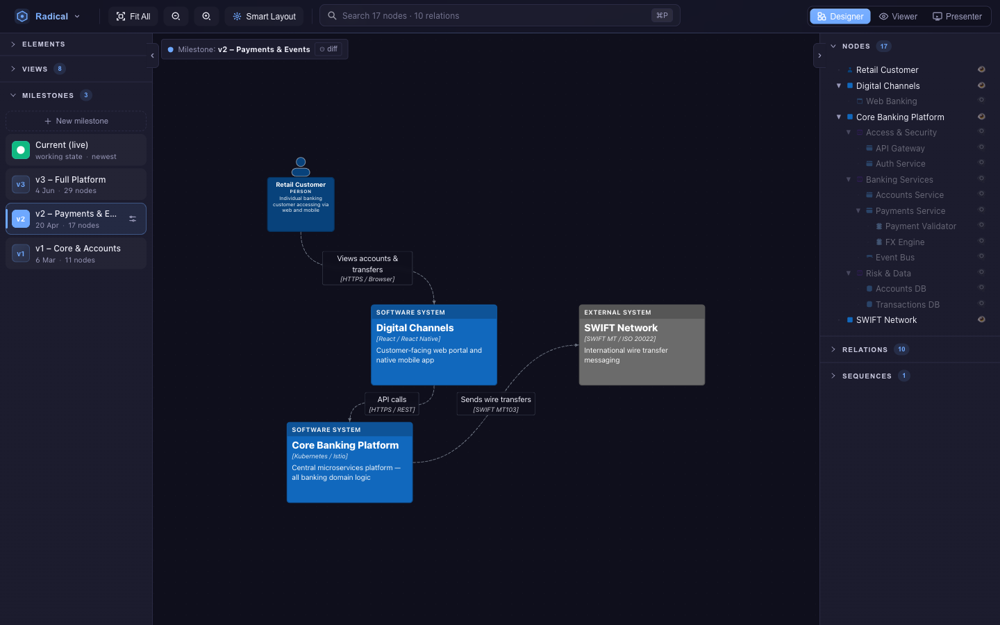
A milestone is a named, dated snapshot of the whole model — elements, relations and sequences. Click + New milestone in the left panel to capture the current state. Click any milestone to step back in time: the canvas shows the model as it was, the chip at the top names it, and every view still works.
- Diff — the toggle on the chip colours what changed since the previous milestone: added, changed, and removed elements drawn as ghosts. Flow views show removed steps the same way.
- Editing in the past — if you change something while a milestone is active you are asked what you meant: propagate the change to that milestone and every later one, save as a new milestone right after it, or discard.
- Slides can be pinned to a milestone, so a presentation can tell the story in order.
Viewer & Presenter
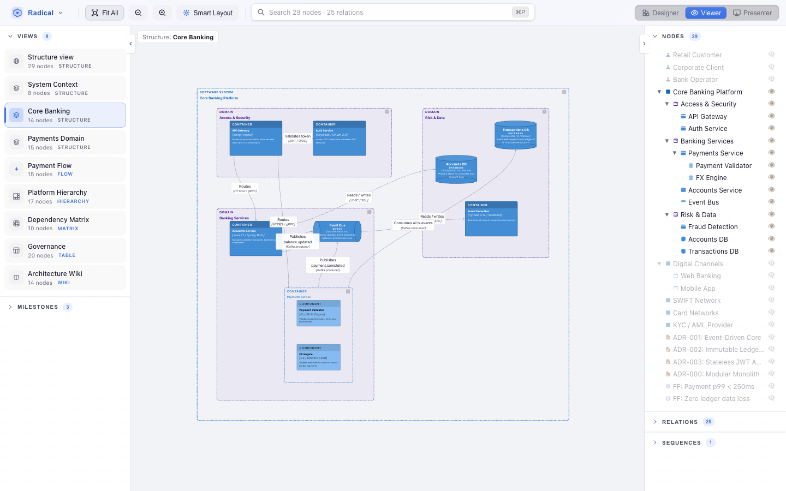
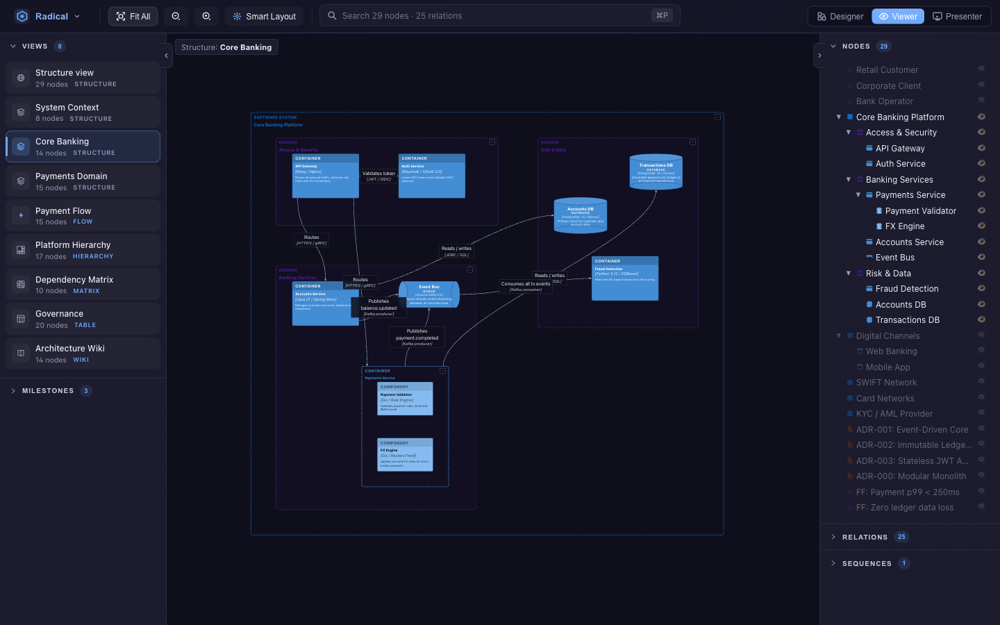
Viewer is a sandbox. Every view opens with the layout it has in Designer; drag, collapse, re-layout, switch views and milestones — all of it is thrown away when you return to Designer, so you can explore freely in front of others. It is also the perspective the Hub uses to show concepts.
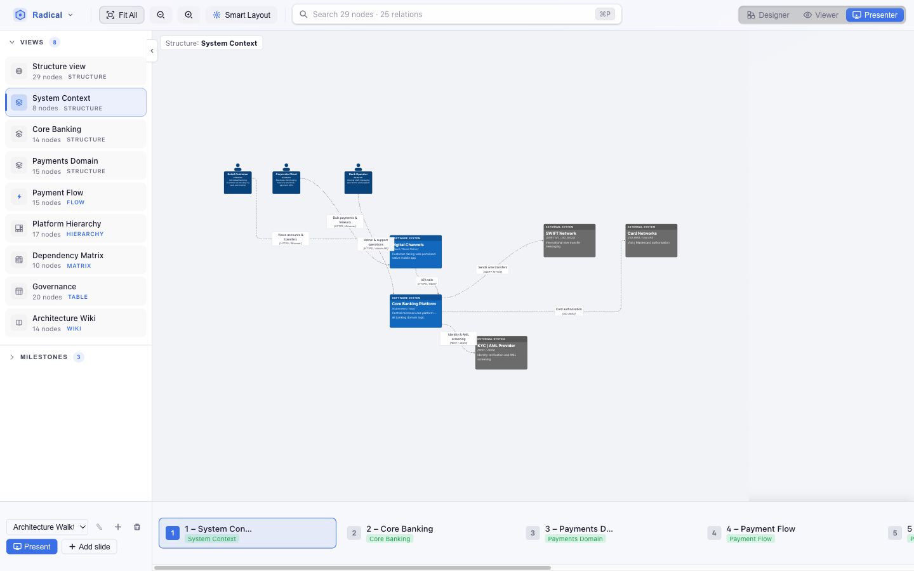
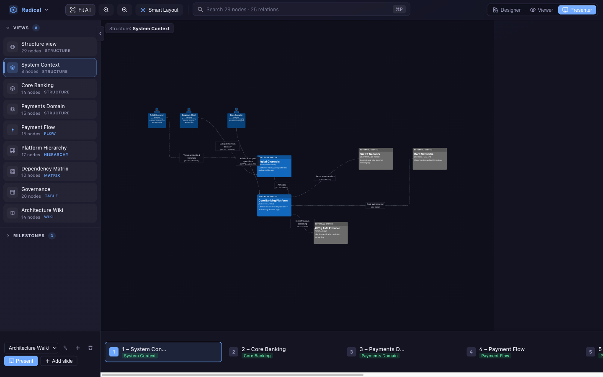
Presenter adds the slide dock. Pick or create a presentation, then Add slide to capture what is on screen: the view, the camera, the layout and collapse state, and the model at that moment. Slides can be renamed, reordered, re-captured, and linked to a view or a milestone. Present (or F5 from anywhere) goes full-screen: → ↓ Space advance, ← ↑ go back, Esc exits. A Flow-view slide replays its sequence one step at a time. The URL updates as you present, so a listener can open the same slide.
Metamodels
A model in Radical is a graph of typed elements and typed relations. The metamodel is the rulebook for that graph: which element types exist, what each one may sit inside, which relations may join which types, and which fields each type and relation has. It travels with the model — in a .radical file it is the metamodel key, in a model folder metamodel.json — so whoever opens the model gets the same rules.
Everything that edits the model consults it:
- The palette lists its types, grouped into C4, Domain, Requirements, States, UX, Governance and Other.
- Placement — dropping an element where its type may not sit (a Component straight on the canvas, a Person inside a System) is refused with a message, and so is reparenting.
- Connections — the relation type is inferred from the pair of element types, and a pair no relation type allows is refused.
- The properties panel, table columns and wizards are built from the type's fields, including enum options and fields that show only when another one has a given value.
- The AI assistant, Radical Forge and the MCP server receive the rules with every request, and their edits are checked against them like yours.
Studio ships two metamodels, chosen when you create a model (New model; --metamodel radical or c4 for the MCP server):
| Metamodel | What it holds | Pick it when |
|---|---|---|
| Radical (default) | Everything in C4, plus the domain (domains, entities), what the architecture must do (needs, EARS requirements, Gherkin scenarios), how things behave (state machines), what users see (mockups) and what was decided (ADRs, fitness functions) — 21 element types and 19 relation types, linked to each other. | The model should explain why the architecture is the way it is, be traceable from a stakeholder's words to a container, or act as the harness that AI-written code is checked against. |
| C4 | The C4 model only: people, software systems, containers (plus databases, web apps and queues), components and groups, joined by one relation, Interacts. | The diagram is the whole job: context and container maps, with nothing else in the palette. |
Both can be extended with your own types and fields in the metamodel editor; the first change makes a copy, Radical (custom) or C4 (custom), so the built-in rules are never edited in place. An unedited built-in metamodel is replaced with the current version each time the model opens, so models get new types as Studio ships them. A model made with the former C4 + DDD metamodel opens under Radical, which holds all of its types unchanged.
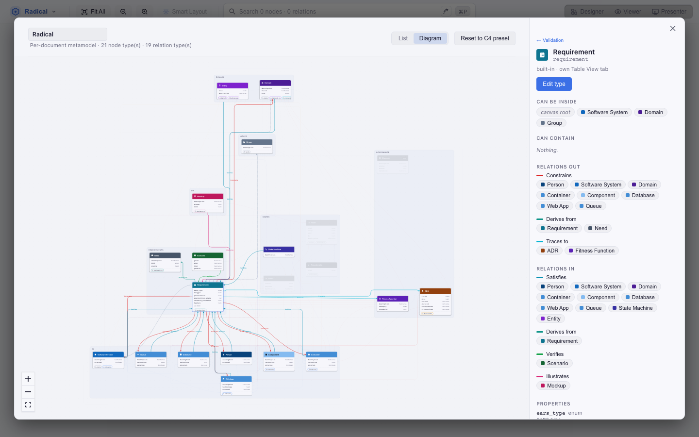
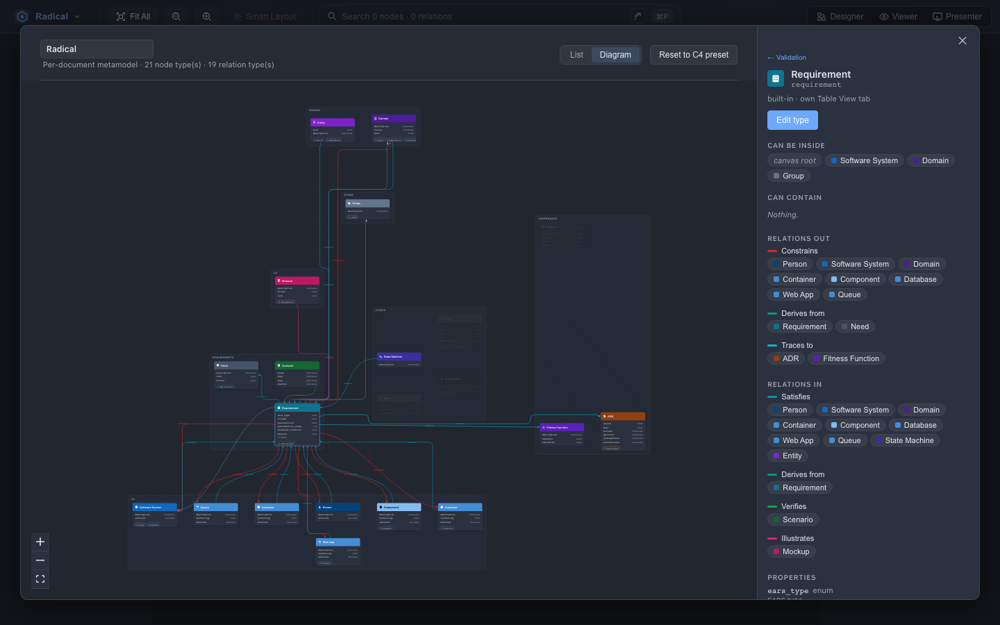
How the layers of Radical connect
Read one requirement through the model, from the words someone wrote to the code that keeps it:
- A Need keeps the stakeholder's text as written — a brief, a user story, a regulation.
- Each Requirement derives from that need: one EARS sentence the system must make true.
- A Scenario verifies the requirement: Given / When / Then, ready for a test.
- A State machine — the lifecycle of a domain Entity — shows the states the scenario walks through, and the scenario verifies the machine too.
- A Mockup illustrates the requirement, the scenario or a state, and is presented by the web app that renders it.
- A Container (or system, component…) satisfies the requirement — it becomes the subject of the EARS sentence — implements the state machine and realises the entity whose data it owns.
- An ADR records the decision the requirement led to (traces to) and constrains the containers it governs; a Fitness function implements the ADR as an automated check.
Every arrow in that story is a relation type with a fixed direction; the sections below describe each type and each relation, and which pairs they join.
The C4 metamodel
The C4 model describes software at four levels of zoom: the people and systems around yours (context), the deployable parts of a system (containers), the parts of a container (components), and code, which Radical leaves to your editor. Radical's C4 adds three specialised containers — database, web app, queue — so the diagram says what each part is without a note. Every C4 type has a Description and an External flag (except Group); containers and components have a Technology as well. Both metamodels contain all of this.
Element types
- Person
- Someone who uses or runs the system: a customer, an operator, another team. A person stands at the root of the canvas or inside a group, never inside a system — they are outside of it by definition. Mark a person External when they belong to another organisation. Retail Customer, Bank Operator.
- Software System
- Something that delivers value to its users and is owned by one team: yours, or one you depend on (mark it External). On a context diagram it is a box; expanded, it holds its containers. Systems may nest inside other systems and groups, and in Radical inside a domain, where the system is the bounded context that realises that (sub)domain. Core Banking Platform; SWIFT Network (external).
- Container
- Something that runs or stores data and is deployed on its own: a service, a worker, a mobile app, a serverless function. It lives inside a system (or a group within one). Technology says what it is built with. Payments Service — Kotlin, Spring Boot.
- Database, Web App, Queue
- Containers with a known role, drawn with their own shapes: a Database stores data and never starts an interaction; a Web App is a browser front end and may hold components; a Queue carries messages between containers. All three live in a system or a group and have a Technology. Accounts DB — PostgreSQL; Web Banking — React; Event Bus — Kafka.
- Component
- A part of a container behind a clear interface: a controller, a domain service, an adapter. Components live inside a container, a web app or a group — never straight in a system or on the canvas. Payment Validator inside Payments Service.
- Group
- A labelled boundary with no meaning of its own: a team, a layer, a deployment zone. Groups nest in groups, sit at the root, or inside a system to gather some of its parts (as Structurizr groups do). No relation starts or ends at a group: connect what is inside it.
The Interacts relation
Interacts is the only relation in C4 and covers any meaningful interaction: the source calls, uses, sends to or delivers to the target. Its label says what happens (“Makes payments using”), its Technology how (“JSON/HTTPS”). The direction is the direction of the request, not of the data: draw it from the initiator.
- Person → system, container, web app, component.
- Software System → person, system, container, database, web app, queue, component.
- Container and Web App → person, system, container, database, web app, queue.
- Component → component, container, web app, database, queue, system.
- Queue → container, web app, component (a consumer it delivers to).
What the rules leave out is deliberate: a Database never initiates, so nothing starts at one; a container does not call a component of another container directly — draw the call to the container, or from component to component; and no relation touches a Group.
The Radical metamodel
Radical is the default. It contains the whole C4 metamodel unchanged, except that a Software System may also sit inside a Domain, and adds thirteen element types in five layers. The types of the new layers can sit at the root, in a system, in a domain or in a group, unless noted. Needs, requirements, scenarios, mockups, ADRs and fitness functions open a wizard when you create them, and most of the new types have their own tab in the Table view.
Domain layer
- Domain
- A part of the problem space, in the language of the business rather than of the software: Payments, Customer onboarding. Domains nest in domains to any depth (subdomains) and in groups. Kind says how much it matters — core (where you compete), supporting or generic (buy it) — and Vision what it is for. A Software System placed inside a domain is the bounded context that realises it. Between domains, Depends on and Partnership draw the context map (see relations).
- Entity
- A thing the domain keeps track of and that has an identity over time: a reservation, an order, a payment. Entities live in a domain or a group. Kind is aggregate root (the default, drawn with a solid border) — a consistency boundary other aggregates refer to by id — or entity (dashed), a part that belongs to exactly one aggregate through Part of. The C4 element that owns the entity's data realises it, a state machine is its lifecycle, and it can satisfy requirements. In the Table and Wiki views the parts of an aggregate list under its root. Order (root) with Order Line (part of Order).
Requirements layer
- Need
- Raw input in the stakeholder's own words, kept verbatim: a product brief, a user story, a stakeholder note, meeting notes, a regulation (Kind), with its Source — who said it, or where it came from. A need is not a requirement: nothing satisfies or verifies it, and it has no status — being in the model means it was heard. Requirements derive from it, and a need can sit under a broader need. Radical Forge stores the brief it starts from as a need. “Customers must confirm high-value transfers on their phone.” — PSD2, regulation.
- Requirement
-
One thing the system shall do, written as an EARS sentence. EARS type picks the pattern and shows only the clauses it needs: ubiquitous (“The system shall…”), event-driven (“When trigger, …”), state-driven (“While precondition, …” — or While in state, pointing at a State: “While the Order is Ready, …”), unwanted behaviour (“If condition, then …”), optional (“Where feature, …”) and complex (any combination). Action is what the system shall do, Rationale why. Type the whole sentence in the wizard and it is split into the fields for you.
The card on the canvas shows the composed sentence; its subject is the first element that satisfies the requirement, so linking a container makes the sentence name it. A requirement derives from a need or a broader requirement (decomposition), traces to the ADRs and fitness functions it led to, and can constrain C4 elements directly. “When a transfer exceeds €1,000, the Payments Service shall require strong customer authentication.” - Scenario
- An acceptance example in Gherkin: Given the starting situation, When something happens, Then the outcome, with Extra steps for And / But lines. A scenario verifies a requirement, and a state machine when it walks through its states; Given is then the source state and Then the target. Scenarios become tests — which is how a coding agent turns the model into checks. Given a confirmed reservation, When staff mark it ready, Then the customer is notified.
States layer
Event-driven, hierarchical statecharts with the semantics of SCXML and XState; the State machines chapter shows how to build one on the canvas.
- State Machine
- The lifecycle of one entity, drawn as a frame that holds its states. It is the Lifecycle of exactly one entity and is named after it on the canvas; the C4 elements that run it implement it; scenarios verify it; it can satisfy requirements and emit events when it is not yet known which state does.
- State
- A situation the entity can be in. States live only inside a machine or another state: a state with child states is compound. Kind normal is the usual; parallel makes its child states regions that are active at the same time; final ends its parent (drawn as a bullseye). A state can run Entry and Exit actions and an ongoing Do activity, and emit events from them.
- Pseudostate
- A point the machine passes through but never rests in. Initial (a filled dot) is where the machine, and every compound state that is not parallel, starts — with exactly one outgoing transition. Choice (a diamond) branches on guards; shallow and deep history (H, H*) return to the state that was last active. Pseudostates live inside a machine or a state.
- Event
- Something that happens and can trigger a transition: Source is external (from outside the system), internal or a timer, with an optional Payload. Events live in a machine, a system, a domain or a group, so one event can be shared. A transition points at the event that triggers it and the events it raises; people, C4 elements, machines and states emit events.
UX layer
- Mockup
- One screen of the product: its Screen / route, a Design link to Figma or Penpot, and optionally a low-fi wireframe drawn by AI on the card. A mockup illustrates the requirements, scenarios and states it shows, is presented by the web app, container, component or system that renders it, and navigates to other mockups, with the trigger — together, the screen flow. See Mockups & screen flows.
Governance layer
- ADR
- An Architecture Decision Record in the Nygard / MADR shape: Status (proposed, accepted, deprecated, superseded), Date, Context, Decision, Consequences and Alternatives considered. An ADR constrains the elements the decision governs, supersedes the ADR it replaces, is what requirements trace to, and what fitness functions implement. A new ADR starts proposed with today's date. ADR-001 Event-driven core — constrains Payments Service and Event Bus.
- Fitness Function
- An objective, preferably automated check that the architecture still has a property it was designed for (from Building Evolutionary Architectures): what it measures (Description), its Category — structural (dependencies, layering), operational (latency, availability), process (review, deployment) or holistic — and the Threshold / success criteria. It implements the ADR it verifies and constrains the elements it guards; requirements can trace to it. “Payment p99 < 250 ms” — operational, implements ADR-001.
- Blueprint
- A curated reference architecture imported from the Concept Hub — not drawn by hand, so it is not in the palette. It has a Status (draft, reviewed, approved, deprecated), the Domain / context it fits and a Rationale, and arrives with its systems, requirements, mockups and views. It sits at the root or in a domain or group and has no relations of its own.
Relations in Radical
Radical keeps Interacts between C4 elements and adds eighteen relation types. Each has a direction — read it as a sentence from source to target — and joins only the pairs listed. When you connect two elements Studio picks the relation type the pair allows; two pairs allow two types (entity → entity, domain → domain), so there you choose it in the properties panel.
Domain
- Realises
- The software behind the domain. System or container → domain: the bounded context that implements the domain. System, container, component or web app → entity: the element that owns the entity's data. Orders Service realises Order.
- Part of
- Entity → entity: a part of an aggregate points to its root. Aggregates never contain each other; they refer to each other with References.
- References
- Entity → entity: one aggregate refers to another by id, with a Cardinality (one or many) and a description. Order references Customer (one).
- Depends on
- Domain → domain: the source domain needs the target to do its work — the plain arrow of a context map.
- Partnership
- Domain → domain with a context-mapping Pattern: partnership, shared kernel, customer–supplier, conformist, anti-corruption layer, open host service, published language or separate ways — how the two teams' models meet.
Traceability
- Derives from
- Requirement → need: the requirement turns that stakeholder input into a shall-statement. Requirement → requirement: decomposition into finer requirements. Need → need: a need inside a broader one. The Table and Wiki views show these as a tree, and Add child there creates the link. Nothing else may point at a need.
- Satisfies
- Any C4 element, a domain, an entity or a state machine → requirement: this element is what makes the requirement true. The first one becomes the subject of the requirement's EARS sentence. An optional Note says how.
- Verifies
- Scenario → requirement or state machine: the scenario is the acceptance test for it.
- Traces to
- Requirement → ADR or fitness function: the decision the requirement led to, or the check that keeps it.
Behaviour
- Lifecycle of
- State machine → entity: the machine is the lifecycle of that entity — one machine per entity (two lifecycles of one thing are regions of a parallel state).
- Implements (C4 → machine)
- System, container, component or web app → state machine: this element runs the machine.
- Transition
- State or pseudostate → state or pseudostate, within one machine. It points at its trigger Event (none means a completion transition, taken when the source finishes), has a Guard and Actions, lists the events it Raises, and is external or internal (stays in the state without exiting it). The canvas labels it
event [guard] / actions ^raised. - Emits
- Person, system, container, component, web app, queue, state machine or state → event: this element raises the event; for a state, On says whether from its entry, exit or do activity. A transition raises events through its Raises field instead.
UX
- Illustrates
- Mockup → requirement, scenario or state: the screen shows this requirement being met, this scenario's step, or what the user sees while the entity is in this state.
- Presented by
- Mockup → web app, container, component or system: the part of the architecture that renders the screen.
- Navigates to
- Mockup → mockup, with the Trigger (“Tap Confirm”): one step of a screen flow.
Governance
- Constrains
- ADR, fitness function or requirement → person, system, domain, container, component, database, web app or queue: the decision, check or requirement applies to that element; an optional Note says how. This is what an agent reads before it changes the element.
- Supersedes
- ADR → ADR: the newer decision replaces the older one (set the older one's status to superseded).
- Implements (fitness function → ADR)
- Fitness function → ADR: the check verifies that the decision still holds.
Rules and checks
The metamodel is enforced in two ways.
Refused at once
- Placing or moving an element where its type may not sit, or at the root when its type needs a parent (a component, a state, a pseudostate).
- Connecting a pair of types that no relation type allows: “Relation not allowed: Database → Person”.
- Moving an element into itself or one of its descendants.
The same refusals reach the AI assistant, Radical Forge and the MCP server as messages they can act on.
Listed as issues
Some rules are about the model as a whole, and a model is often incomplete while you build it, so they are warnings rather than refusals. The Validation list in the metamodel editor shows them (and the MCP server's get_issues), each taking you to the element:
- Any metamodel: a type the metamodel does not know or a misplaced element (errors, e.g. from a hand-edited file), a relation between types no relation type joins, a reference field that points at nothing or at the wrong type, an empty required field, too few or too many elements of a type (in custom metamodels that set those).
- Domain model (Radical): an aggregate root that is part of something (it should reference it); a part of something that is not an aggregate root; an entity that belongs to no aggregate or to two.
- State machines (Radical): a machine with no entity, or an entity with two machines; a machine or compound state with no initial pseudostate, or more than one; an initial pseudostate without exactly one outgoing transition, or with one coming in; a parallel state with fewer than two regions or with an initial pseudostate; a final state with children or outgoing transitions; a transition that leaves its machine; two unguarded transitions from one state on the same event; a state the initial state cannot reach.
Metamodel editor
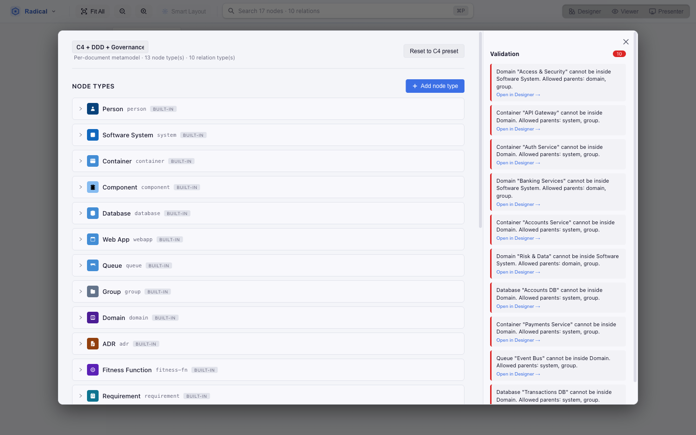
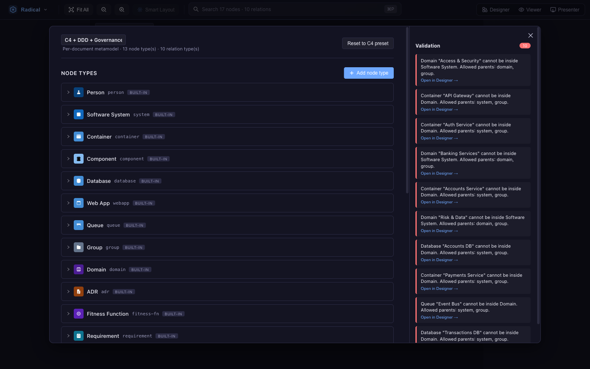
Radical menu → Metamodel editor…. Start from a preset — Radical (C4 with DDD domains and entities, and what shapes the architecture: needs, requirements, ADRs, fitness functions, scenarios, mockups and state machines) or plain C4 — then shape it (a model made with the former C4 + DDD preset opens under the Radical metamodel, which holds all of its types):
- Node types — label, icon, colour, default and collapsed size, allowed parents, whether it may sit at the root, min/max cardinality, and properties (text, long text, number, boolean, enum with options and a default, or a reference to one or many elements of a type; a property can be visible only when another one has certain values).
- Relation types — label, colour, the allowed pairs of source and target types, and their own properties (references included: that is how a transition points at its event).
- Built-in types can be extended but not deleted; add as many of your own as you need.
Validation is live: the palette, the parent drop-down, drag-and-drop and connection previews all consult the metamodel, and the AI assistant's patches are checked against it too. The Validation list beside the types shows everything the model breaks now — errors, and warnings such as a missing required field, a reference to nothing or a state machine rule — and takes you to the element.
Concept Hub
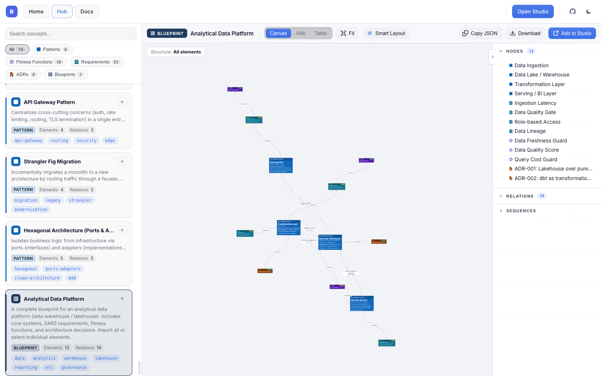
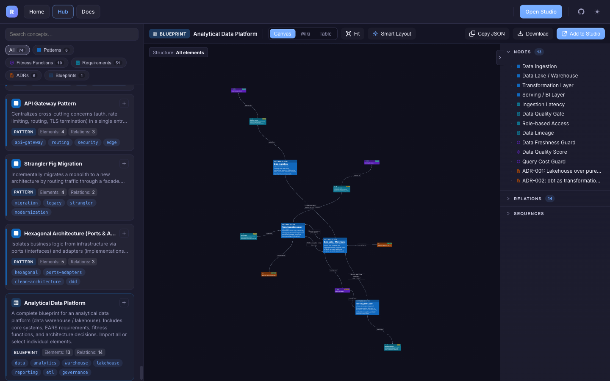
The Hub is a curated library of requirements, ADRs, fitness functions, patterns (C4 fragments) and blueprints (whole solution skeletons). It is rendered by the same engine as Studio, so you can open any concept as a diagram, wiki page or table before importing it. Select several and Add to Studio.
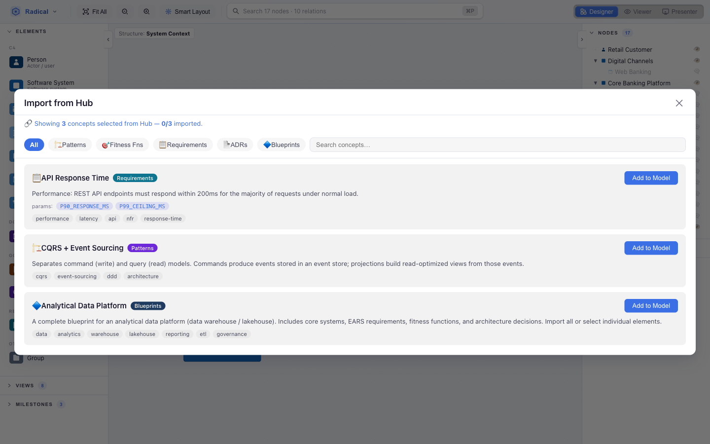
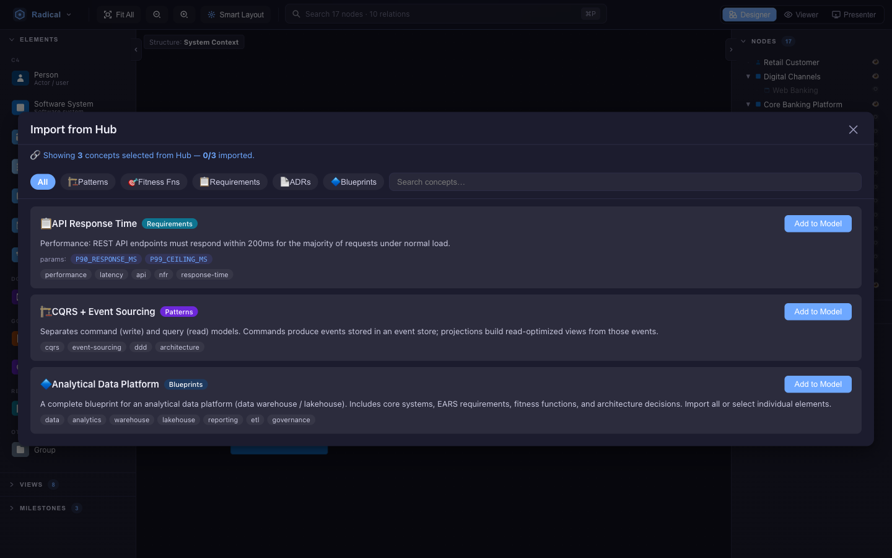
- Templates — concepts with parameters (a latency budget, an endpoint, a data class) ask for values on import; the Hub template section in the element's properties lets you change them later.
- Blueprints — pick which elements and which referenced concepts to bring in. Every blueprint ships one screen flow per actor (mockups with wireframes) and named views: on the canvas System context, Containers, Governance map, Mockups (every screen flow with its wireframes), its technical flow and one Flow view per screen flow; in the wiki Governance and Requirements. In the Hub, the view selector next to Canvas / Wiki / Table lists the views of the current mode; on import they arrive as views of your model, limited to the elements you picked.
- Drop target — with a compatible container selected, imported elements become its children.
AI assistant
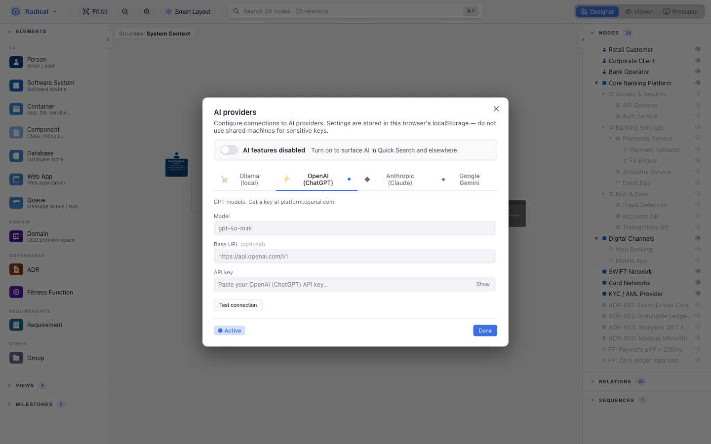
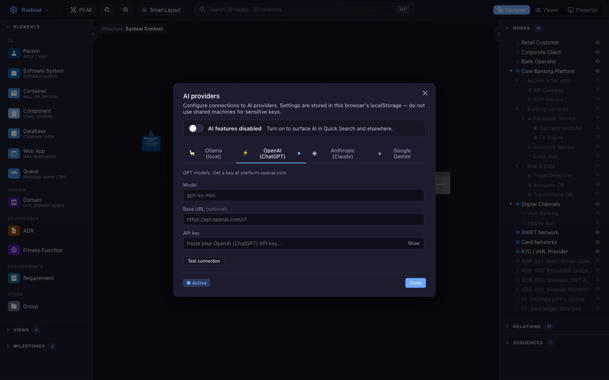
Bring your own model: Ollama (local, no key), OpenAI, Anthropic Claude or Google Gemini. Enable AI, pick the active provider, paste a key, Test connection. Nothing is proxied through radical.tools.
Then open Quick Search (⌘/Ctrl+P) and switch to ✨ AI mode — Tab on an empty box, the ✨ button, or ⌘/Ctrl+Enter to send the current text. The assistant sees the model and its metamodel and can:
- Answer questions — “what depends on the Event Bus?”, “which containers have no owner?”. It queries the model with a small query language (
LIST NODES WHERE …,GET NEIGHBORS,STATS MODEL) rather than guessing. - Change the model — “add a Redis cache between the API gateway and the accounts service”. The answer is a patch (add / update / delete nodes and relations, add views) that is validated against the metamodel, applied atomically and undoable like any other edit.
- Draft governance — turn a paragraph or a need into EARS requirements (linked back to the need) or an ADR with the right fields filled.
The same tools are available outside Studio: the MCP server hands them to Claude Code, Claude Desktop, Codex or any other MCP client.
Radical Forge
Radical Forge (New model → Create with Radical Forge on the welcome screen, or Radical menu → Radical Forge…) turns a plain-language description of a system into a model, one reviewable stage at a time: Requirements (EARS) → Domain model → Fitness functions → Gherkin scenarios → State machines → Mockups → C4 model. Each stage may first ask a few clarifying questions, suggests matching Hub concepts, and can be regenerated before you continue.
- The description is kept as a Need. When you press Start, the text is saved in the model as a need (named after its first line), and the Requirements stage links every requirement it writes to it with Derives from. If the model already has needs, Start from on the Description step loads one instead, and your edits are saved back to it. Going back and starting again updates the same need instead of adding a second one.
- Hub concepts that fit. For the Requirements, Fitness functions and C4 stages, Forge ranks the Hub catalogue against your description (rarer words count more, and so do the concepts linked from a blueprint that fits), and the model picks at most five that fit, whatever language the description is in. They appear under Picked from the Hub, checked; untick the ones you do not want, or Import one as it is. When a blueprint fits the whole system, the C4 stage offers it first, to import as a skeleton. Without AI you see the best keyword matches instead.
- Five views. Every element a stage creates goes into a view of its layer: Conceptual (the need, requirements, scenarios and mockups, and for now the domain model too), Domain (the domains and their entities), States (the state machines, their events and the entities they are the lifecycle of), Logical & physical (the C4 elements) and Governance (fitness functions and ADRs). A view is created when its first element arrives and reused by a later run with the same name. New elements are placed beside what the view already shows, in a block that grows sideways rather than down.
- Arrange after each stage. When a stage is done, Forge asks whether to keep its new elements in a Row, a Column or a Grid on their view (an alignment every later layout keeps), and offers Smart Layout on that view. Nothing is rearranged unless you choose it.
- The domain model comes right after the requirements, which are its source: the stage adds the domains and entities the requirements talk about, groups entities into aggregates, links the references between them and maps how the domains relate, and links each entity to its requirements. The later stages speak its language: scenarios name its entities, state machines model the lifecycle of its entities, and C4 links the systems and containers to the domains and entities they realise.
- State machines follow the scenarios: the stage finds the entities of the domain model with a real lifecycle (often none, and rarely more than three), models each with a state machine, and derives its transitions from the scenarios — Given the source state, When the event, Then the target state and its effect — including declines, timeouts and cancellations. The scenarios verify the machine, and the C4 stage later links the elements that run it (Implements) and own the entity's data (Realises).
- Mockups come before C4: the stage creates the user-facing screens with Illustrates and Navigates to links, then Generate wireframes draws a wireframe for every mockup that has none. The C4 stage then designs the front-ends the screens need and links each mockup to its container with Presented by.
- Finish here ends the run at any stage and keeps what has been generated. The final step summarises every stage (what was added, what was skipped) and exports the scenarios as
.featurefiles; ← Back resumes where you stopped. - From your own agent. The same run, with the same stages, prompts, clarifying questions and Hub suggestions, works in Claude Code, Claude Desktop or any other MCP client, with the agent's model instead of a key in Studio. While an agent runs Forge on the folder Studio has open, the Forge button in the search bar pulses — blue while the agent generates a stage, amber while it waits for you (its questions, how to arrange a stage, whether to go on) — with the stage it is at; click it to see the run's steps, read only. Answer the agent in its own chat. The button stops pulsing when the run finishes, when the agent's client closes, or after 30 minutes without a change.
MCP server
The MCP server lets a coding agent work on your model directly: Claude Code, Claude Desktop, Codex or any other client that speaks the Model Context Protocol. It runs locally over stdio, is bound to one Markdown folder, and offers the same tools as the AI assistant in Studio, so the agent can read the architecture, ADRs and requirements before it writes code and update the model when the design changes. Nothing leaves your machine except what your agent sends to its own provider.
Set it up
Build it once with Node.js 20 or newer, from a clone of the repository (see local install):
npm install
npm run build -w @radical/mcp
node apps/mcp/dist/index.js --folder /absolute/path/to/my-model # waits for MCP messages on stdinThen register that command with your client, using absolute paths:
# Claude Code
claude mcp add radical-folder -- node /path/to/radical.tools/apps/mcp/dist/index.js --folder /path/to/my-model
# Codex
codex mcp add radical-folder -- node /path/to/radical.tools/apps/mcp/dist/index.js --folder /path/to/my-modelFor Claude Desktop, add it under mcpServers in ~/Library/Application Support/Claude/claude_desktop_config.json (on Windows %APPDATA%\Claude\claude_desktop_config.json) and restart the app. Give the full path to node, because the app does not see your shell's PATH:
{
"mcpServers": {
"radical-folder": {
"command": "/usr/local/bin/node",
"args": ["/path/to/radical.tools/apps/mcp/dist/index.js", "--folder", "/path/to/my-model"]
}
}
}The folder may also be relative to the directory the client starts the server in. A missing or empty folder becomes a new, empty model; --metamodel radical or c4 picks its metamodel (default radical, the Radical metamodel). A folder with other files and no radical.md is refused, so the server never writes into a folder that isn't a model.
Working alongside Studio
Open the same folder in Studio: in the desktop app, or in a Chromium browser through Open → Folder… (the browser asks for folder access; a model kept only in browser storage cannot be reached by the server). Studio reloads the folder when the agent changes it, so new elements appear on the open canvas. Then ask the agent to call get_model_summary first; the server's instructions tell it to as well.
Tools
| Group | Tools |
|---|---|
| Read | get_model_summary — counts, views, sequences, presentations, the modelling rules the assistant follows (how to write requirements, build a state machine…) and the metamodel rules (property keys and enum options, reference targets, allowed parents, cardinality, allowed relation pairs) · get_issues — everything the model breaks now, as the Validation list shows it · search_model — the assistant's query language (LIST NODES WHERE …, GET NEIGHBORS, LIST SEQUENCES…) |
| Elements & relations | add_node, update_node, delete_node, move_node (change the parent) · add_relation, update_relation, delete_relation |
| Views | create_view, update_view, set_view_nodes, delete_view · smart_layout for All elements or one view · align_nodes / grid_nodes / remove_alignment to keep elements in a row, a column or a grid |
| Sequences & slides | create_sequence, update_sequence, delete_sequence · create_presentation, update_presentation, delete_presentation |
| Metamodel | upsert_node_type, delete_node_type, upsert_relation_type, delete_relation_type |
| Radical Forge | forge_start · forge_clarify → forge_generate → forge_complete_stage → forge_arrange for each stage · forge_wireframe · forge_import_hub_concept · forge_finish |
- Validated like Studio. Writes go through the same schemas and metamodel rules as the editor; an invalid parent, type or relation pair is refused with a message the agent can act on. Warnings do not stop a write, but the ones it brings in (a compound state with no initial state, a reference to nothing) come back with its result, and
get_issueslists them all. A reference such as a transition's event takes an element's id, or atempIdfrom the same session. A tool reports success only after the files are written. - Placement. New elements land inside their parent and parents grow to fit; call
smart_layoutto tidy up. New elements show in All elements until a view lists them (create_view,set_view_nodes). - Metamodel edits. Changing a built-in metamodel saves it as a
…-customcopy, like the Metamodel editor. The server then re-announces the element and relation tools with the new types. - Radical Forge. The agent runs Radical Forge the way the wizard does (and Studio, open on the same folder, shows where the run stands on its Forge button): the server keeps the run (the need, your answers, each stage's summary and what it added) and hands the agent each stage's questions and task, with the Hub concepts that match; the agent asks you, builds the stage with the tools above, and stops after each stage to ask how to arrange it (row, column or grid, and Smart Layout, on the stage's view) and whether to continue, regenerate or finish. In Claude Code, start it with the
/mcp__radical-folder__forgeprompt (named after the server), or just ask for Radical Forge. Wireframes are drawn by the agent too, andforge_finishwrites the.featurefiles to a folder you name. - Plain files. Unrelated files and the text of
radical.mdare left as they were, so the agent's changes show up as small Git diffs.
Single .radical files, milestones, canvas-only actions (switching or focusing the view in Studio) and remote HTTP connections are not supported.
File formats
.radical (JSON)
One file: nodes, relations, sequences, views (with per-view positions, camera and layoutConstraints — the alignments and grids), defaultLayoutConstraints (alignments on All elements), snapshots (milestones), presentations, the metamodel and Hub template records. Older .c4.json files open unchanged.
Markdown folder
my-model/
├─ radical.md # manifest
├─ nodes/
│ ├─ retail-customer.md # one element = one file
│ └─ core-banking-platform/ # containers become directories
│ ├─ _index.md # the container itself
│ └─ payments-service/
│ ├─ _index.md
│ └─ fx-engine.md
├─ relations.json
├─ views.json · sequences.json · snapshots.json · presentations.json
├─ metamodel.json · hubTemplates.json
└─ _layout.json # positions, camera & All-elements alignments — the only noisy file
Each .md has YAML front-matter (id, type, label, then the element's properties, sorted) and the description as body. Hierarchy is the directory tree. Output is deterministic — sorted keys, stable file names — so Git diffs show what changed and nothing else. Edit the files by hand, or let an agent edit them through the MCP server; the app picks them up.
Deep links
Studio mirrors its state into the URL hash so any screen can be bookmarked or shared:
#/m/<mode>/v/<viewId>[/f/<elementId>][/s/<milestoneId>]
#/d/<docId>/m/<mode>/v/<viewId>[/p/<presentationId>/play/1/sl/<n>]
mode designer | viewer | presenter | metamodel
view a view id, or canvas for the default Structure view
f element page (Wiki views) s active milestone
p / sl presentation and 0-based slide while presenting
d ls:<id>, fs:<path> or md:<folder> — which model (local to this machine)A model kept in a file or a Markdown folder loads a moment after Studio opens; the link is applied once it has. A browser folder that needs Reconnect… keeps the link until you reconnect it. File and folder paths only open in the desktop app; in the browser a folder is identified by its id, so its links work in the browser that opened it.
The Hub uses #/c/<conceptId>/v/canvas|wiki|table (plus /cv/<viewId> for one of a concept's named views) and studio.radical.tools/?hub=id1,id2 opens Studio with those concepts queued for import.
Keyboard shortcuts
| Keys | Action |
|---|---|
| ⌘/Ctrl+P | Quick Search (and AI prompt) |
| Tab / ⌘/Ctrl+Enter | In Quick Search: switch to AI mode / send to AI |
| ⌘/Ctrl+Z · ⌘/Ctrl+⇧+Z or Y | Undo · Redo |
| Alt + drag (configurable) | Connect two elements |
| ⌘/Ctrl + drag | Drag with the live physics making room around the element |
| Shift / ⌘/Ctrl / Alt + click | Add to selection |
| Delete | Delete selected elements or relation |
| Double-click canvas | New Software System at the pointer |
| Esc | Cancel connection, close dialogs, leave edit mode; in Hierarchy views go up a level |
| F5 | Start / stop the presentation |
| → ↓ Space · ← ↑ | Next · previous slide while presenting |
| ⌘/Ctrl++ / − / 0 | Zoom in / out / fit (Flow views) |
| Enter | Confirm inline edits (names, notes, table cells) |
VS Code & local install
VS Code extension
The Radical extension opens .radical files in a Radical.Tools editor inside VS Code, keeps the file and the editor in sync in both directions, follows the editor's light or dark theme, and offers Radical: Open file and Radical: Open app commands. It ships with the web build embedded.
Desktop app
# Node.js ≥ 18
git clone https://github.com/radicaltools/radical.tools.git
cd radical.tools
npm install
npm run dev # Electron, hot reload
npm run build && npm start
npm run dev:web # browser build of Studio
npm run dev:hub # Architecture Hub
npm run build -w @radical/mcp # MCP server for coding agentsThe desktop app adds native file dialogs, Markdown folders without browser permissions and --file watching. Everything else is identical to the browser build.